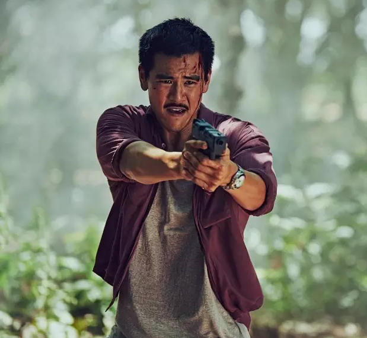
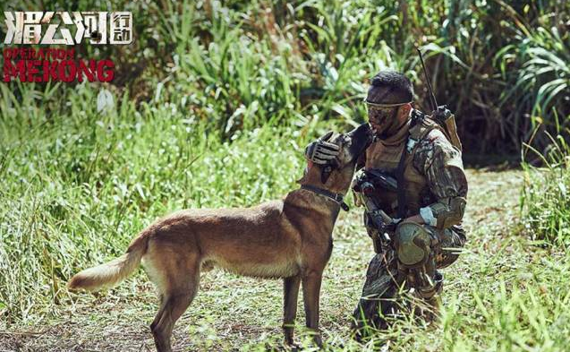
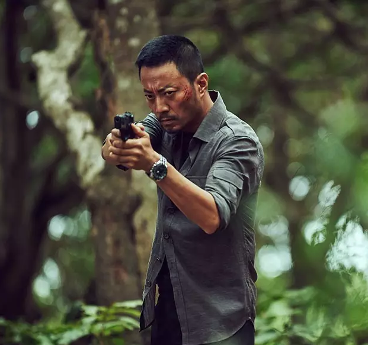
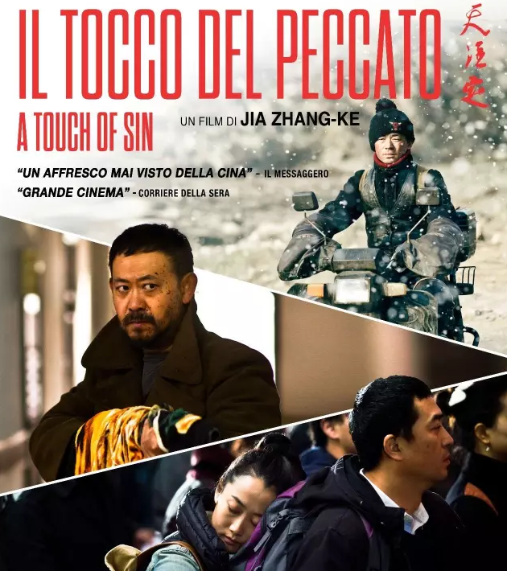

嗯，说的就是《湄公河行动》了。
其实都是节前看完的了，只是放假回家后，除了吃、喝、睡，啥都不想干…… 拖到今天才想着说说……真是real懒我也是hin苦恼。扯回正题……
《湄公河行动》是一部很硬的片子！紧张感十足。
比如虎口救人，商场混战，冲击老巢等等，节奏控制自如，线索编排清晰，比较酣畅。
警犬哮天很酷很招人爱，只是它的结局其实有担心到……毕竟……电影中表现太好的警犬，好像都不会有太好的下场……
影片在夹缝中交代人物，人物画像稍散， 使得各个主配角都有点不那么丰满，留给 演员表现情感的空间也就不多了。兄妹情，父女情，兄弟情， 都有点粗暴加入的感觉，不够自然，也难以深入，大多都是为残酷的对战添加点柔情罢了的感觉。
个别细节的逻辑欠推敲。比如人肉炸弹进得太容易了，外围就不安排任何安检吗？ 比如最后游艇追逐段落，最终对撞那里，感觉我方可以提前脱身吧，或者从反派来讲，也可以提前弃船呃， 还有这个段落有几个特效镜头明显失真，比较扎眼。另外，子弹还是太长眼睛了……产生了不少光环……
心生其实很乐于看到有更多基于真实事件改编的国产电影出现， 毕竟咱们有大量极其适合改编成电影的故事…………这次从警匪类型下手，靠主旋律拓展国产电影画面的 可能性，还是一次不错的尝试的。
当然也没法就此推测未来的电影尺度会突然宽松，毕竟《湄公河行动》带着主旋律的属性，它跟贾樟 柯的《天注定》还不是一个画风的“基于真实事件改编”的电影。什么时候“天注定”式的真实事件改编电影能 上映,能广泛传播，这个氛围也才会不同，也才会有更多的国产电影创作的可能。
